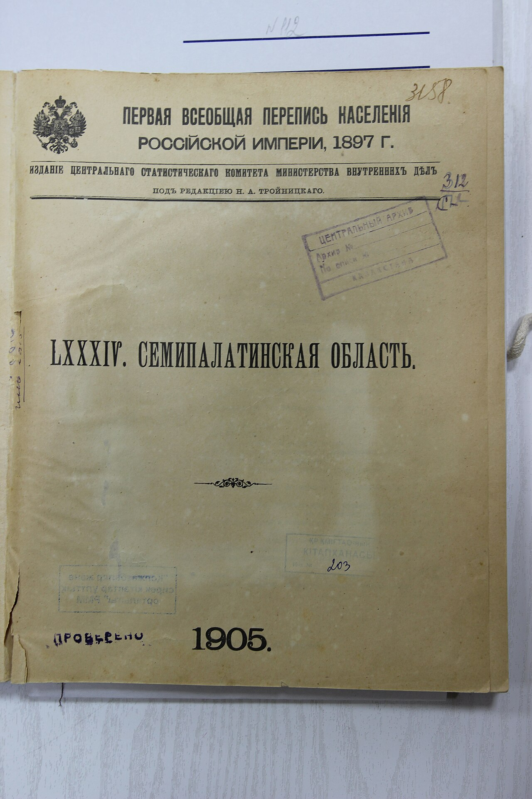

Перейти к содержанию
Редактирование карточки дела
ГА ВКО. Ф. 1-П. Оп. 1. Д. 245 ·
статус публикации
:
На проверке
RU
100%
KZ
80%
EN
60%
Заголовок дела
(RU)
*
Краткое описание содержания
(RU)
Приложение ко всеподданнейшему отчёту военного губернатора. Сведения о населении, управлении, торговле и промыслах пяти уездов.
Историческая справка
(RU)
Область образована в 1854 году; обзоры составлялись ежегодно канцелярией военного губернатора.
Заголовок дела
(KK)
Краткое описание содержания
(KK)
Әскери губернатордың есебіне қосымша. Бес уездің халқы, басқаруы, саудасы және кәсіпшілігі туралы мәліметтер.
Историческая справка
(KK)
Заголовок дела
(EN)
Краткое описание содержания
(EN)
Appendix to the military governor’s report. Data on population, administration and trade of five districts.
Историческая справка
(EN)
Шифр и описание
Фонд
*
1-П
3-Т
14-Ф
Опись
*
Номер дела
*
Шифр (авто)
Начальная дата
*
Конечная дата
*
Листов
Язык документа
Русский
Казахский
Тип документа
Письменный источник
Фотография
Филиал / место хранения
Усть-Каменогорск, главное здание
Риддерский филиал
Филиал Алтай
Зайсанский филиал
Ключевые слова
Статус доступности
Открытый
Публикуется, просмотр онлайн
Ограниченный
Только информационная карточка
Закрытый
Не отображается на сайте
Цифровые копии
Перетащите файлы
или выберите
: PDF, JPG, PNG, WebP, TIFF ·
до 100 МБ на файл
Автоматическая проверка файлов, облегчённые копии для просмотра, мастер-копия сохраняется без изменений.
d245_001.jpg
JPG · 2,4 MB · 300 dpi
Проверен
✕

d245_002.jpg
JPG · 2,2 MB · 300 dpi
Проверен
✕
d245_003.tif
TIFF · 38 MB · мастер-копия
Проверен
✕
Сохранить и отправить на проверку
Сохранить черновик
Просмотр на сайте
Поля с * обязательны
Предложения ИИ
Требуют подтверждения сотрудником
OCR:
распознано 48 листов, уверенность 94%
Категории: Население; Управление
Даты: 1893, 1894; места: Семипалатинск, Зайсан
Дубликатов не найдено
Принять
Отклонить
Проверка перед публикацией
Шифр уникален
Заполнен заголовок RU
Не заполнено описание KZ (80%)
Не заполнена историческая справка EN
Файлы проверены на вредоносный код
Процесс согласования
Черновик
На проверке (редактор получил уведомление)
Одобрено
Опубликовано